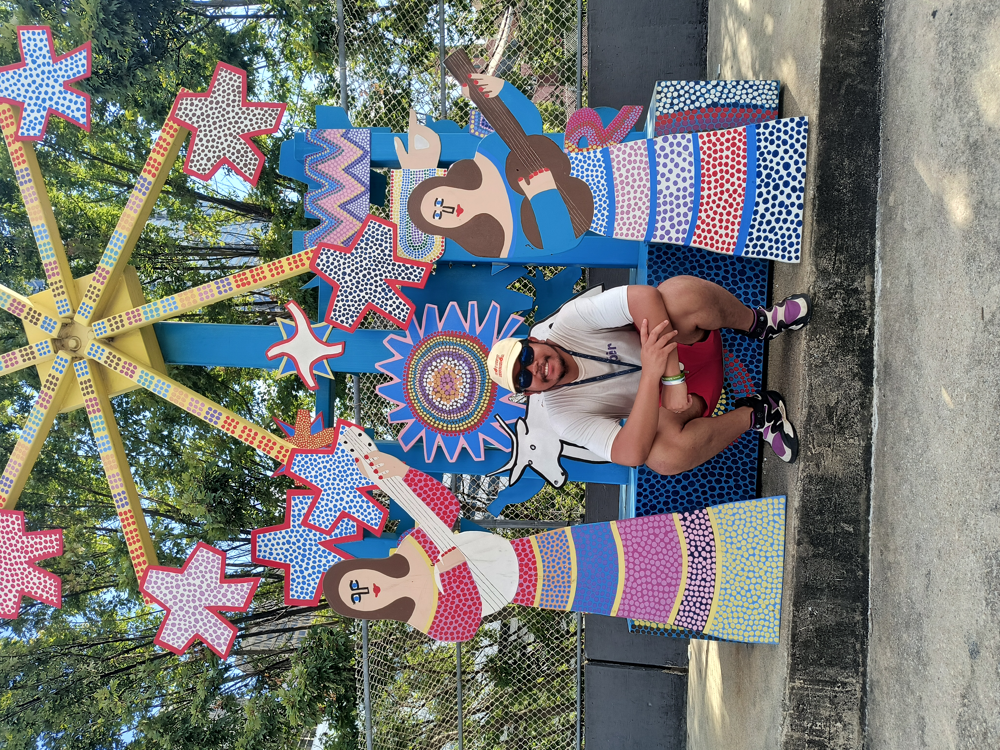

About Me
Hi there, I'm Fabrice, a PhD student in mathematics at Clemson University with a passion for understanding the structures that shape complex systems. My journey into mathematics began through physics. After earning degrees in Theoretical Physics from the University of Antananarivo, I found myself increasingly drawn to the mathematical ideas that lay beneath the formulas. The search for underlying structure, patterns, and relationships sparked a curiosity that eventually led me from physics into pure mathematics. Today, my research focuses on applying category theory to Boolean networks. I'm interested in how categorical methods can help capture, describe, and model these networks in a way that reveals deeper structural insights. More broadly, I'm fascinated by the power of abstraction and by how mathematical frameworks can uncover connections between seemingly different ideas. Among the many areas of mathematics, topos theory has particularly captured my imagination. I appreciate its unifying perspective and its ability to bridge different branches of mathematics through a common language of structure and logic. Lately, I've also become increasingly interested in formalization and the growing relationship between mathematics and artificial intelligence. The possibility of using proof assistants and AI-driven tools to support mathematical discovery, verification, and communication is something I find both exciting and full of potential. When I'm not thinking about categories, networks, or formal proofs, I'm often exploring new technologies, learning new tools, and building projects that help me better understand the ideas I'm working with. I enjoy the process of learning, experimenting, and connecting concepts across different fields. At heart, I'm driven by curiosity. Whether I'm studying mathematics, exploring technology, or formalizing proofs, I'm always looking for the structures that tie things together and help us see the bigger picture.

Research Interests
My work focuses on pure mathematics and the study of abstract mathematical structures, rigorous proofs, and theoretical questions.
Books I Read
I enjoy reading books that introduce new ideas, challenge the way I think, and offer a fresh perspective on mathematics and the world. I will share some of my favorite books and current reads here.
Hobbies
Outside mathematics, I enjoy discovering interesting technology, working on personal projects, reading, and finding new ways to stay curious and creative.